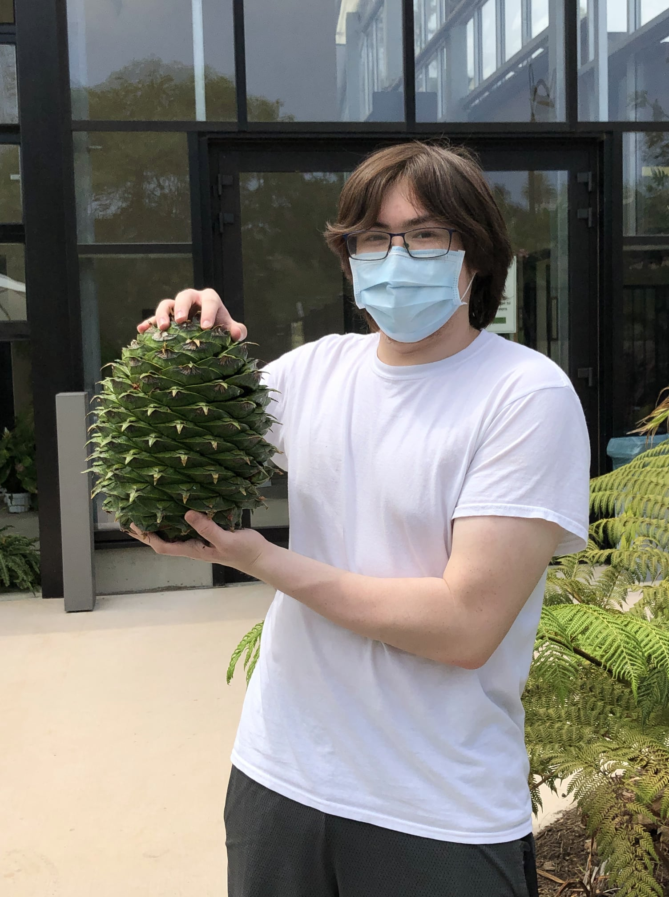

Adam Nicewarner
Senior at UW, majoring in Geography and Data Science. Likes long walks on the beach and video games.
Draco Bynum
Senior at UW, majoring in Geography: Data Science and minoring in Informatics. I like to go on hikes and camping trips up in the mountains.
bynumd@uw.edu
Samuel Affolder
I am in my third year at UW studying Geography with Data Science and am on the cross country and track team.
swaff@uw.edu

Liam Geary
Graduating with a BA in Geography / Data Science later this week. Woohoo.
lrgeary@uw.edu
Luke Houser
I am in my third year at UW studying Geography with Data Science and am on the cross country and track team.
lhouser@uw.edu